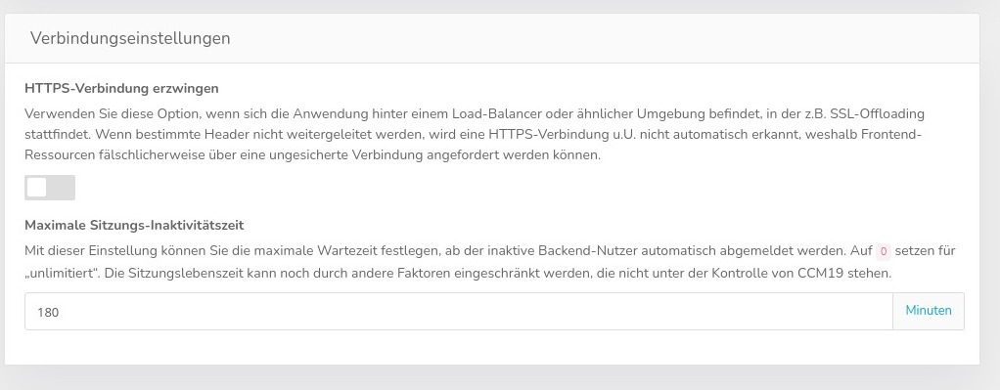
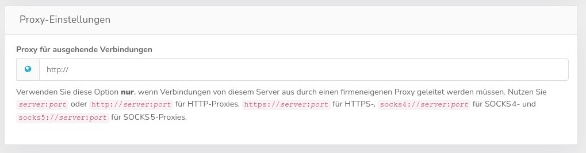
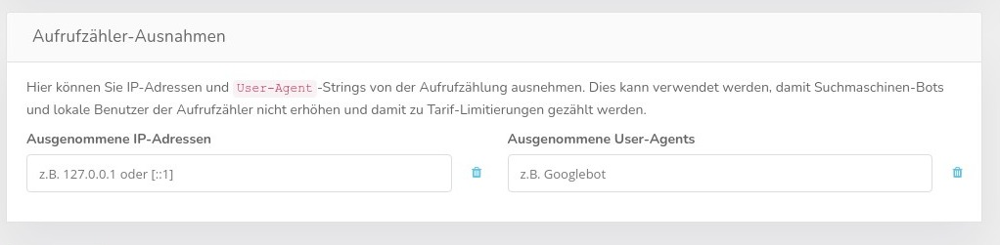

Diese speziellen Einstellungen kommen nur sehr selten zum Einsatz. CCM19 ist so aufgebaut dass es in der Regel mit den normalen Einstellungen der Provider problemlos zurecht kommt.

Verwenden Sie diese Option, wenn sich die Anwendung hinter einem Load-Balancer oder ähnlicher Umgebung befindet, in der z.B. SSL-Offloading stattfindet. Wenn bestimmte Header nicht weitergeleitet werden, wird eine HTTPS-Verbindung u.U. nicht automatisch erkannt, weshalb Frontend-Ressourcen fälschlicherweise über eine ungesicherte Verbindung angefordert werden können.
Bei Problemen mit SSL Funktionen ist das also Ihre erste Anlaufstelle.
Mit dieser Einstellung können Sie die maximale Wartezeit festlegen, ab der inaktive Backend-Nutzer automatisch abgemeldet werden. Auf 0 setzen für unlimitiert. Die Sitzungslebenszeit kann noch durch andere Faktoren eingeschränkt werden, die nicht unter der Kontrolle von CCM19 stehen.
Verwenden Sie diese Option nur, wenn Verbindungen von diesem Server aus durch einen firmeneigenen Proxy geleitet werden müssen. Nutzen Sie *server*:*port* oder http://*server*:*port* für HTTP-Proxies, https://*server*:*port* für HTTPS-, socks4://*server*:*port* für SOCKS 4- und socks5://*server*:*port* für SOCKS 5-Proxies.

Hier können Sie IP-Adressen und User-Agent-Strings von der Aufrufzählung ausnehmen. Dies kann verwendet werden, damit Suchmaschinen-Bots und lokale Benutzer der Aufrufzähler nicht erhöhen und damit zu Tarif-Limitierungen gezählt werden.
Diese Funktion wird in der Cloud Version global für alle User gesetzt.
